1/22 • Intro
I'm Mu from Taiwan and live in the Bay Area now. I love ✈️ traveling
and 📷 documenting life through my Fujifilm camera
I'm also a (Maine Coon) 🐱 cat person and a creator sharing
my cat videos (@coon_buffet)
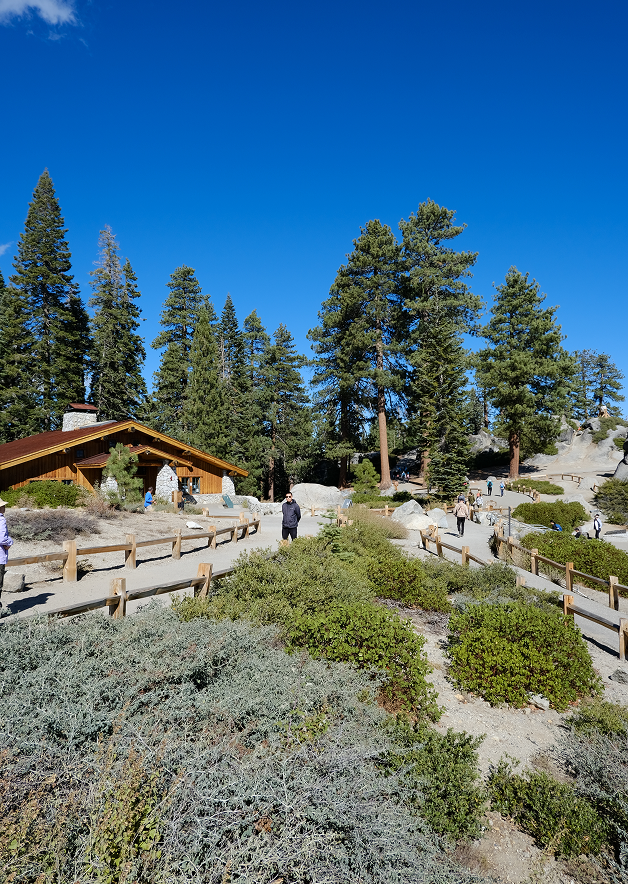

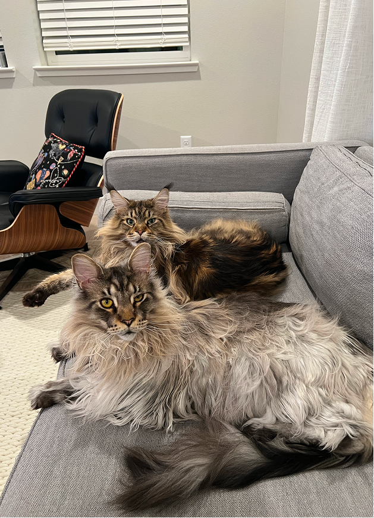
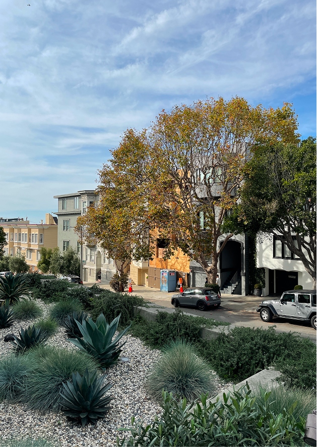
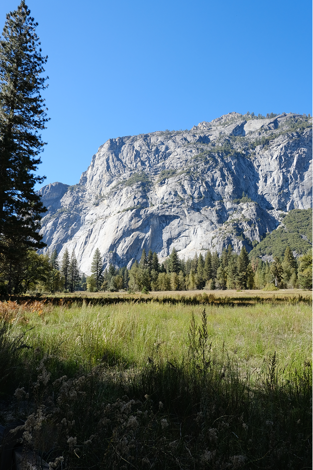
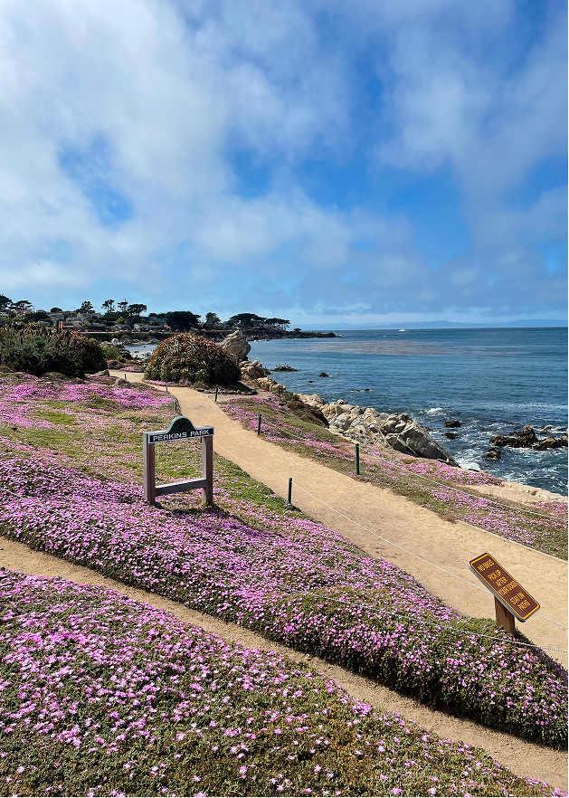

My design journey
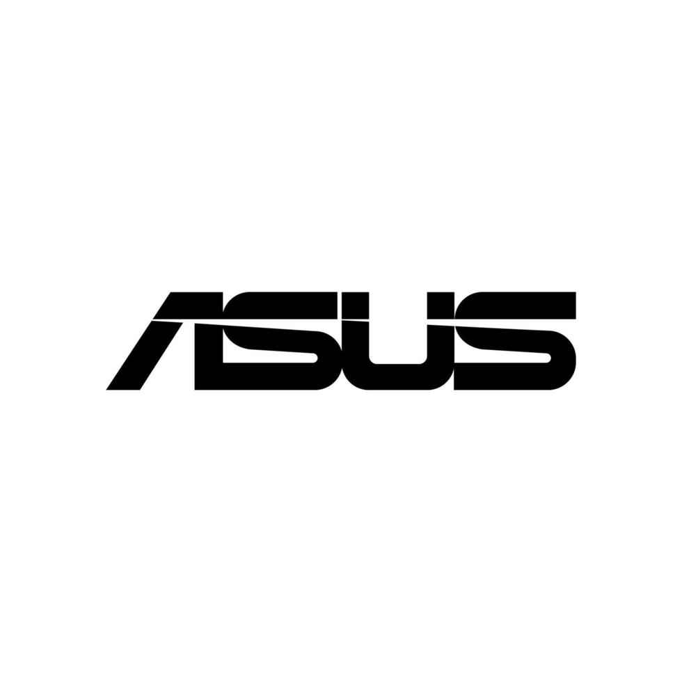
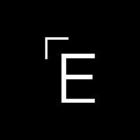
Designed Ad Carousel for Google Search — scaled to multiple verticals and shopping use cases

Led strategy and design for business tools and ad products, 20+ launches across 6 platforms
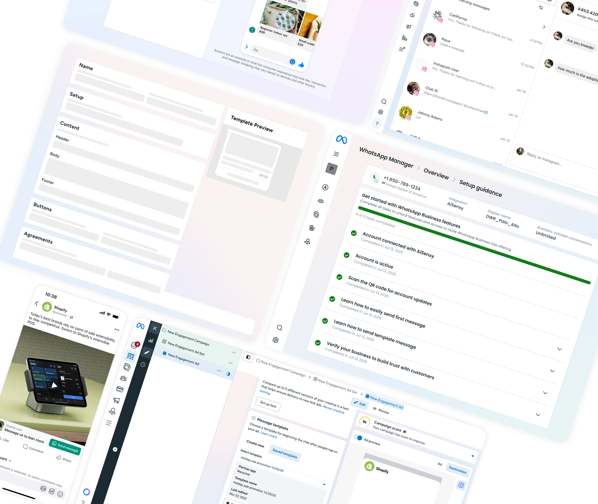
Grew products and revenue through —
1 New Tools/Use Cases
Simplified ad creation flows to increase adoption and revenue
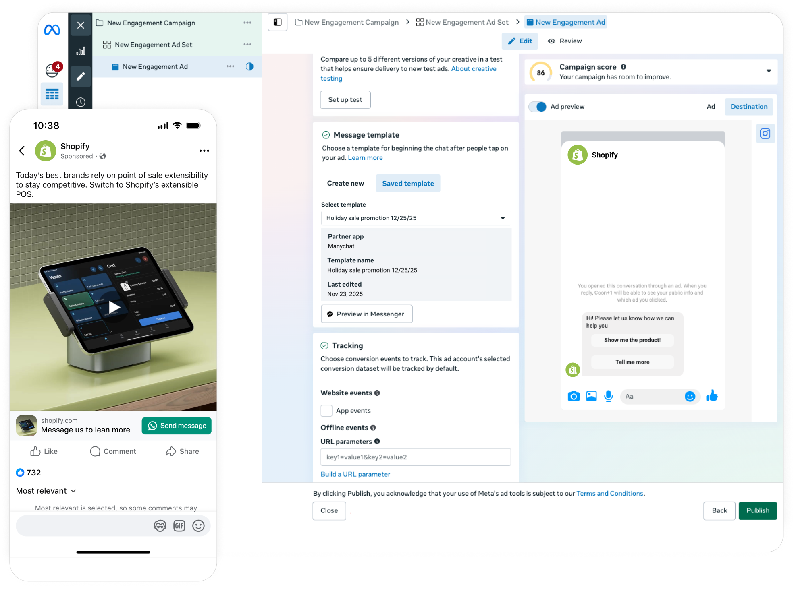
1 New Tools/Use Cases
Built new tools to unlock additional use cases and revenue streams
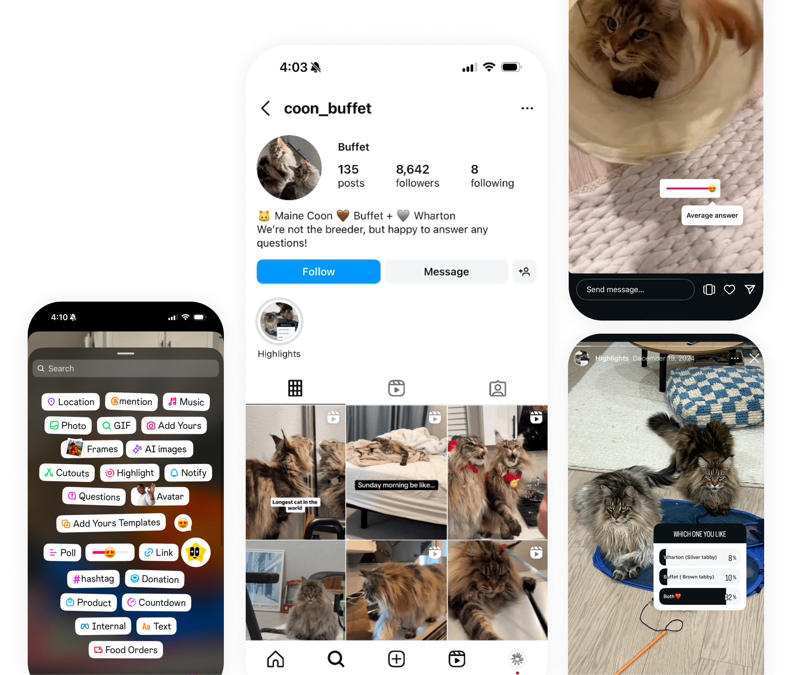
2 Modular Framework
Improved usability, reduced cost for fast-growing tools

2 Modular Framework
Designed a reusable component system to scale features faster and reduce dev cost
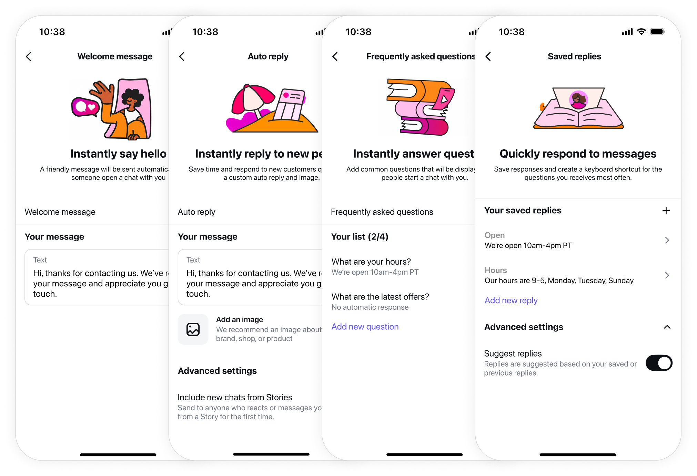
3 Upsells & Onboarding Guide
Drove 3x adoption lift by connecting end-to-end user journeys
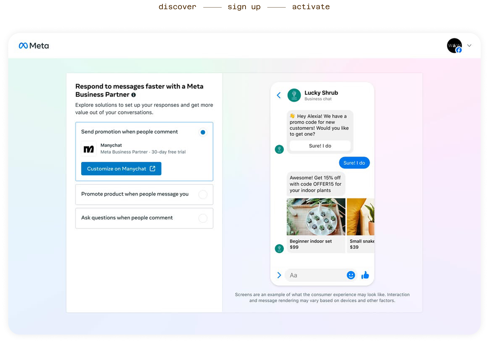
3 Upsells & Onboarding Guide
Designed contextual upsell surfaces across 6 platforms
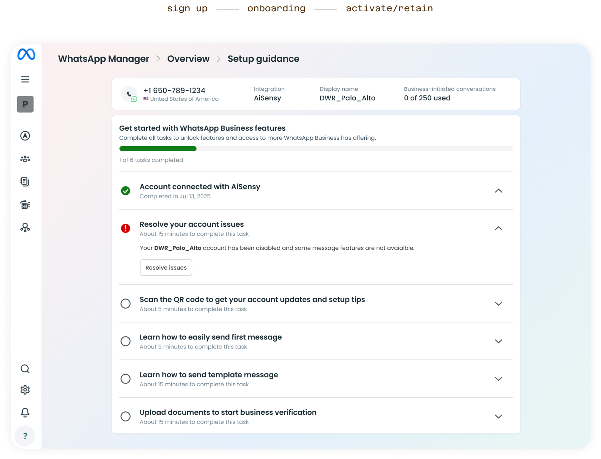
3 Upsells & Onboarding Guide
Built unified onboarding guide to reduce drop-off and increase activation
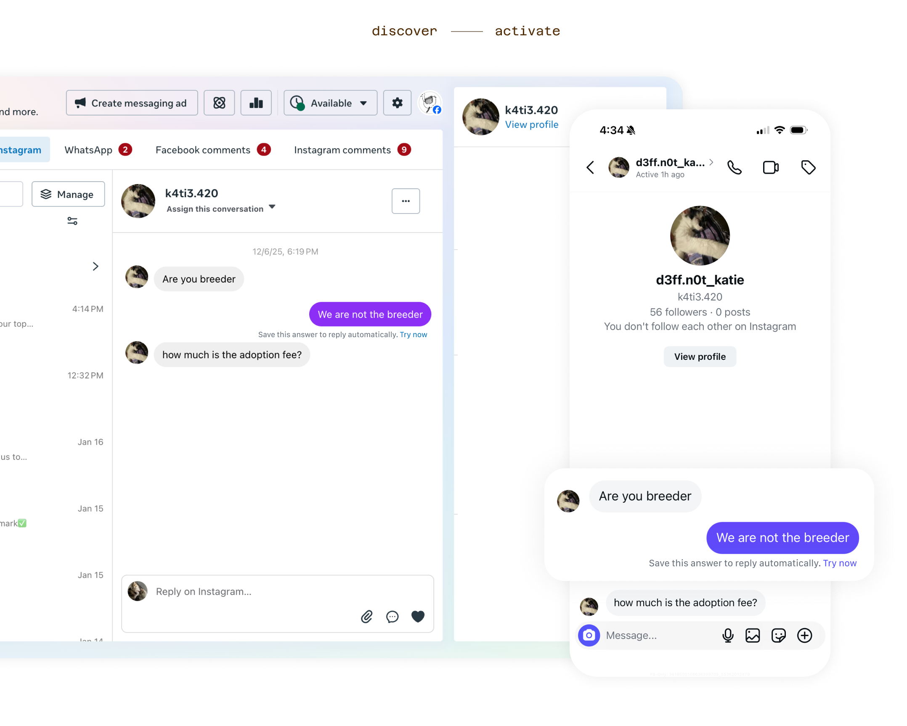
Grew user adoption and revenue through onboarding guide and new tool

Revamped Onboarding for WhatsApp Partner Platforms
+9% onboarding completion, +19.7% revenue, scaled across ecosystem
New Monetization Tool for Meta Business Inbox
Turned ambiguous concept into feasible MVP, accelerated by AI